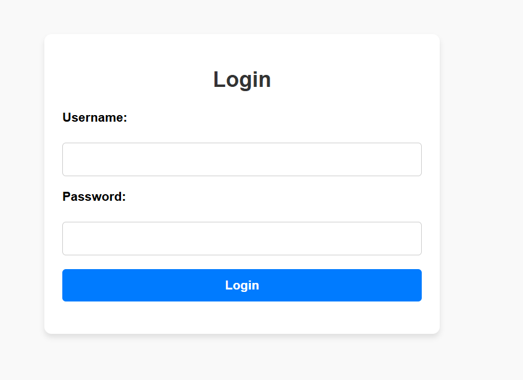
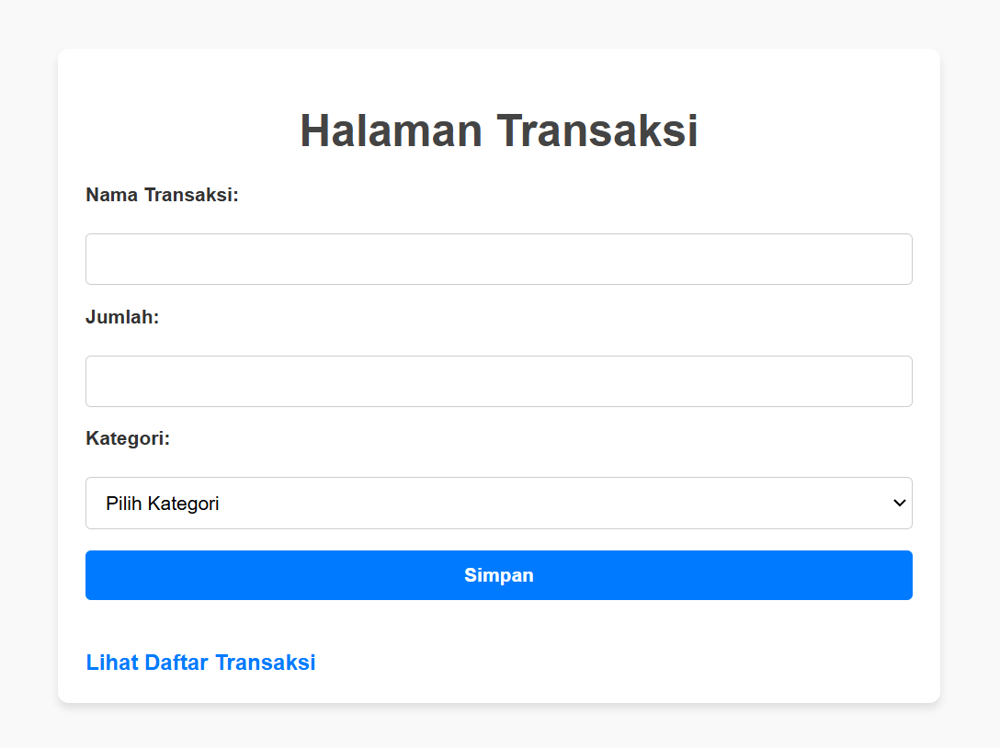

<main>
    <h1>Selamat Datang di Aplikasi Perpustakaan Online</h1>
    <center><h4><p>Langkah-langkah menggunakan aplikasi ini:</p></center></h4>
    <ol>
    <div class="step">
        <h2><li>Login ke akun Anda.</li></h2>
        
    </div>
    <div class="step">
        <h2><li>Lakukan transaksi peminjaman atau pengembalian buku.</li></h2>
        
    <div class="step">
        <h2><li>Periksa profil Anda untuk detail akun.</li></h2>
        
    </ol>
</main>

<style>
    body {
    font-family: Arial, sans-serif;
    margin: 0;
    padding: 0;
    background-color: #f9f9f9;
}

main {
    max-width: 800px;
    margin: 50px auto;
    padding: 20px;
    background-color: #fff;
    box-shadow: 0 4px 6px rgba(0, 0, 0, 0.1);
    border-radius: 8px;
}

h1 {
    text-align: center;
    color: #333;
    margin-bottom: 30px;
}

.step {
    margin-bottom: 30px;
}

.step h2 {
    font-size: 18px;
    color: #007BFF;
    margin-bottom: 10px;
}

.step img {
    max-width: 100%;
    height: auto;
    border-radius: 8px;
    box-shadow: 0 2px 4px rgba(0, 0, 0, 0.1);
}

@media (max-width: 768px) {
    main {
        margin: 20px;
        padding: 15px;
    }

    h1 {
        font-size: 20px;
    }

    .step h2 {
        font-size: 16px;
    }
}
</style>